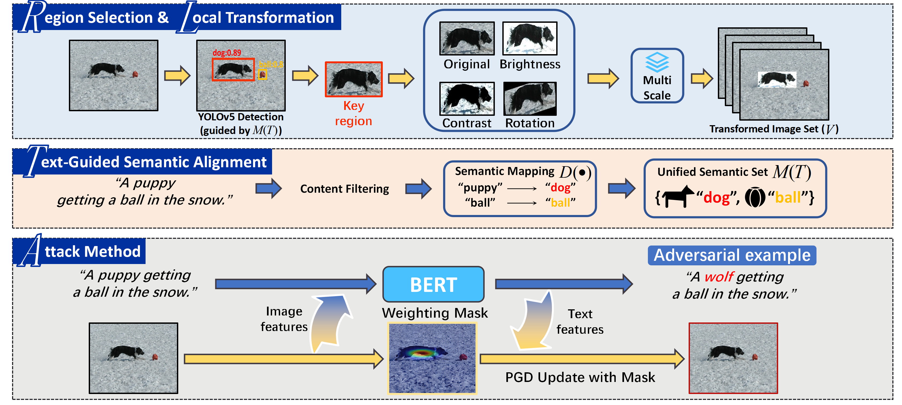
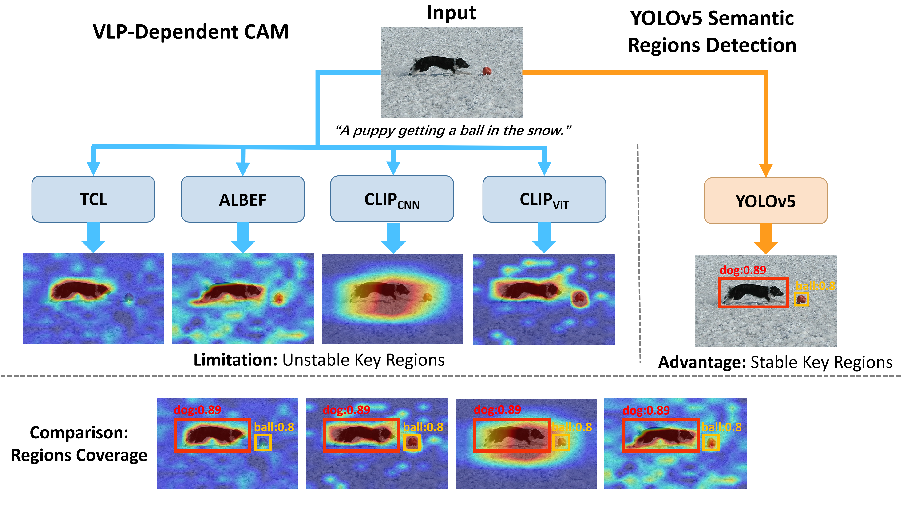
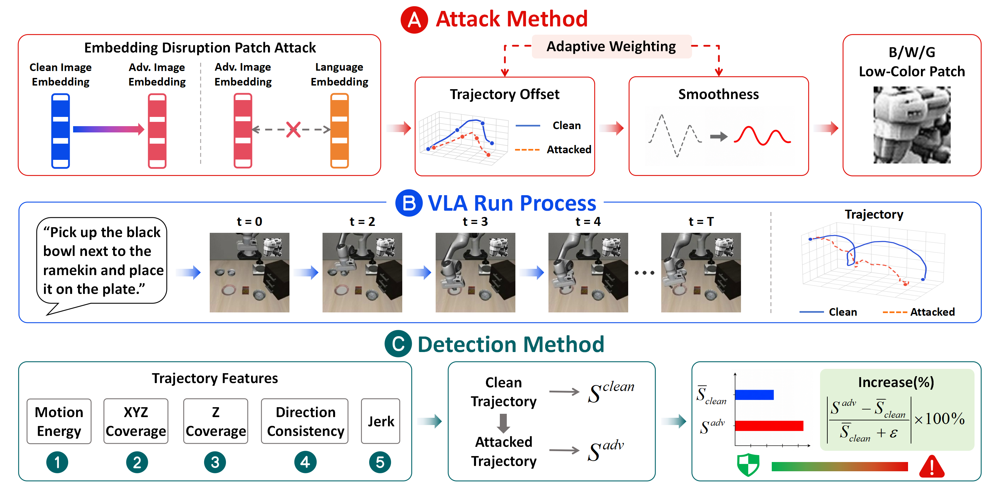
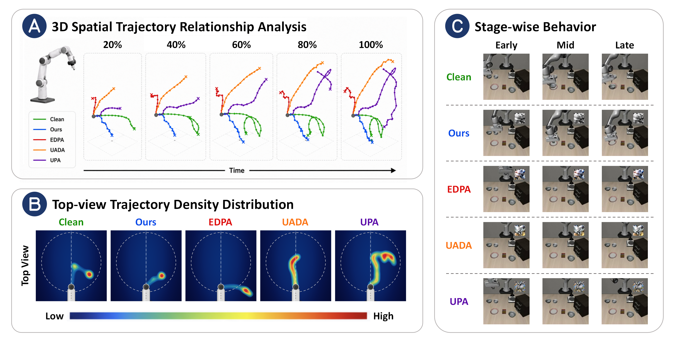

Semantic Region-Guided Transferable Attacks on Vision-Language Pretraining Models
提出语义区域引导攻击框架 SRGA，借助外部语义先验识别视觉语义区域，并通过跨模态语义对齐、局部变换与空间加权优化实现协同扰动，在黑盒场景下提升 VLP 模型对抗攻击的可迁移性。
Hi! I am Beer Duck
01 / ABOUT ME
👋 潘佳阳 · 汕头大学 · 数据科学与大数据技术 · 23级本科生
📷🎮 爱好 摄影 · 旅游 · 王者荣耀 · CSGO · 三角洲行动 ...
🔬 科研 VLP 模型对抗迁移攻击 · VLA 模型物理补丁攻击 & 攻击检测
「去经历吧，人生不应该一直看着参考书」
🎯 27推免生在线蹲硕导/直博 🙋♂️ 27fall
02 / SELECTED RESEARCH


提出语义区域引导攻击框架 SRGA，借助外部语义先验识别视觉语义区域，并通过跨模态语义对齐、局部变换与空间加权优化实现协同扰动，在黑盒场景下提升 VLP 模型对抗攻击的可迁移性。


面向 VLA 模型提出隐秘物理补丁攻击与黑盒轨迹检测框架，兼顾轨迹隐蔽性与异常运动检测。
03 / AWARDS
04 / PHOTOGRAPHY